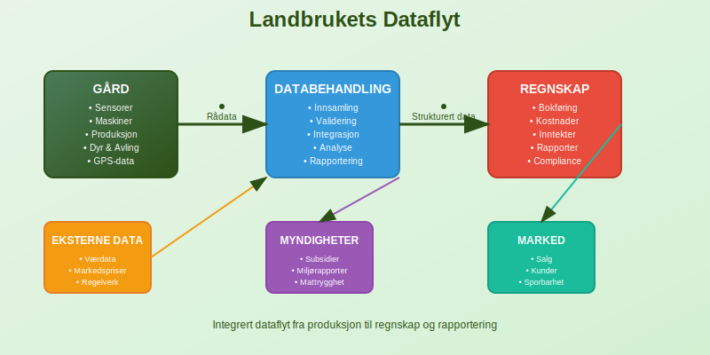
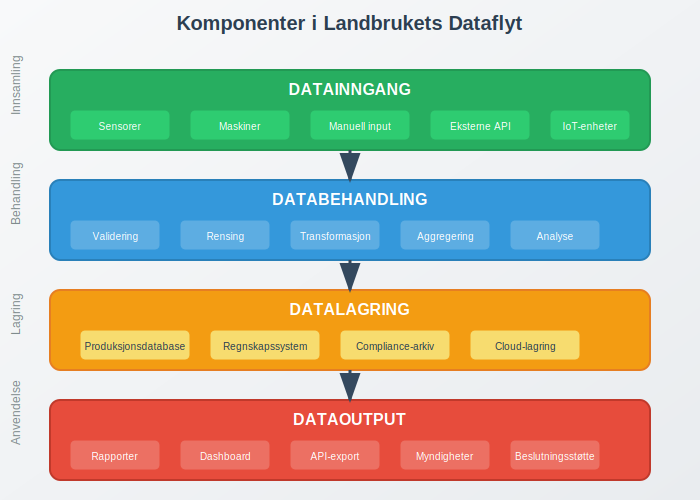
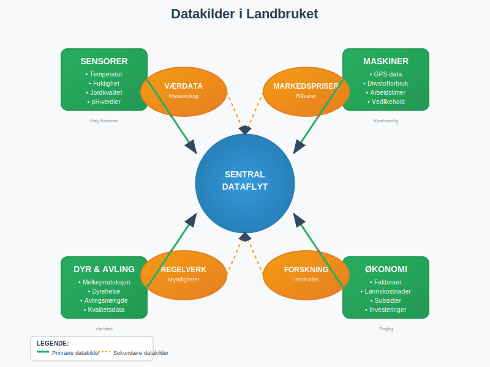
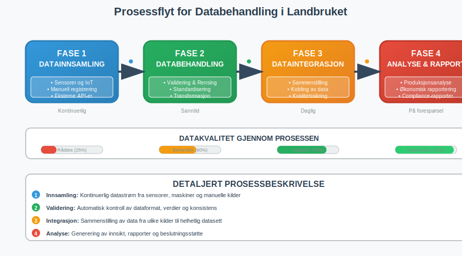
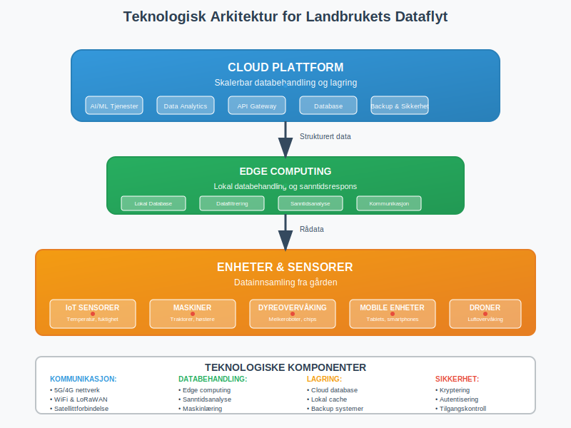
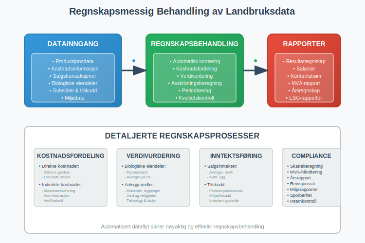
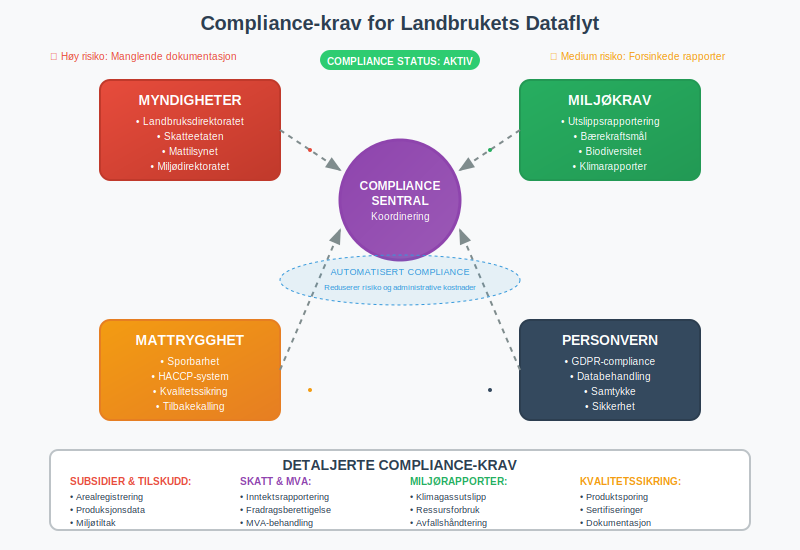
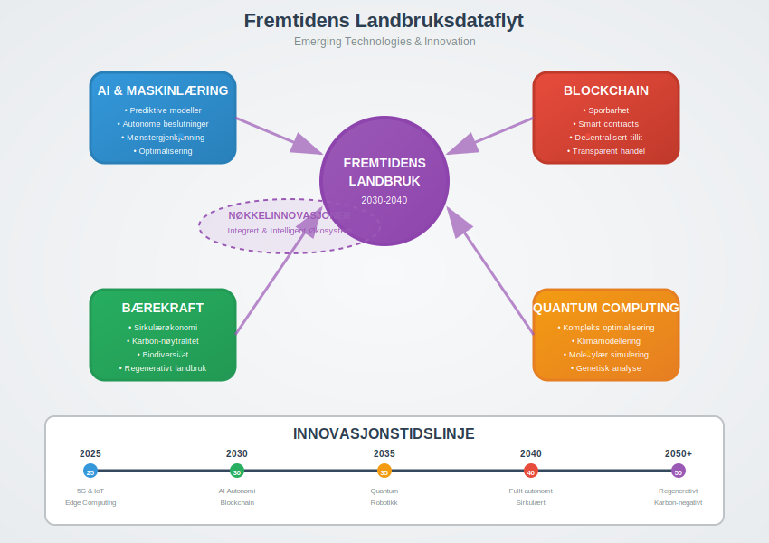

Landbrukets dataflyt refererer til den systematiske bevegelsen og behandlingen av informasjon gjennom hele den landbruksbaserte verdikjeden. Dette omfatter alt fra produksjonsdata på gården til regnskapsføring og rapportering til myndigheter.

Hva er Landbrukets Dataflyt?
Landbrukets dataflyt er den digitale informasjonsstrømmen som knytter sammen alle aspekter av landbruksvirksomhet. Dette inkluderer:
- Produksjonsdata fra sensorer og maskiner
- Økonomiske transaksjoner og fakturaer
- Regulatoriske rapporter til myndigheter
- Kvalitets- og sporbarhetsinformasjon
- Miljø- og bærekraftsdata
Betydningen for Moderne Landbruk
I dagens digitaliserte landbruk er effektiv dataflyt avgjørende for:
- Optimalisering av produksjon og ressursbruk
- Overholdelse av regelverk og rapporteringskrav
- Forbedret internkontroll og sporbarhet
- Bedre grunnlag for økonomiske beslutninger

Datakilder i Landbruket
Primære Datakilder
Landbruksvirksomheter genererer data fra mange kilder:
Produksjonsdata
- Sensorer for temperatur, fuktighet og jordkvalitet
- GPS-data fra traktorer og andre maskiner
- Avlingsdata fra skurtresker og høsteutstyr
- Dyredata fra melkeroboter og fôringsanlegg
Økonomiske Data
- Innkjøpsfakturaer for såkorn, gjødsel og utstyr
- Salgsinntekter fra avlinger og animalske produkter
- Lønnskostnader for sesongarbeidere
- Subsidier og tilskudd fra det offentlige
Regulatoriske Data
- Miljørapporter om utslipp og ressursbruk
- Dyrevelferdsdokumentasjon
- Mattrygghetssporing gjennom verdikjeden
- Arealbruk og avlingsregistrering
Sekundære Datakilder
- Værdata fra meteorologiske tjenester
- Markedspriser på råvarer og produkter
- Regulatoriske oppdateringer fra myndigheter
- Forskning og utviklingsdata fra landbruksinstitutter

Dataflyt-prosessen
Fase 1: Datainnsamling
Den første fasen omfatter systematisk innsamling av data fra alle relevante kilder:
| Datakategori | Innsamlingsmetode | Frekvens | Lagring |
|---|---|---|---|
| Produksjonsdata | Automatiske sensorer | Kontinuerlig | Lokal database |
| Økonomiske data | Manuell registrering/API | Daglig | ERP-systemer |
| Regulatoriske data | Kombinert | Månedlig/Årlig | Compliance-system |
| Miljødata | Sensorer/Rapporter | Ukentlig | Miljødatabase |
Fase 2: Databehandling og Validering
Innsamlede data må behandles og valideres før videre bruk:
- Datarensing for å fjerne feil og inkonsistenser
- Standardisering av formater og enheter
- Validering mot kjente parametere og grenseverdier
- Aggregering av data på ulike nivåer
Fase 3: Dataintegrasjon
Data fra forskjellige kilder integreres i et samlet system:
- Kobling mellom produksjonsdata og økonomiske resultater
- Sammenstilling av miljødata med regulatoriske krav
- Integrering med regnskapssystemet for automatisk bilagsføring
- Spesialiserte landbrukskontoplaner for korrekt kategorisering av landbrukstransaksjoner
Fase 4: Analyse og Rapportering
Den integrerte dataen brukes til:
- Produksjonsanalyse og optimalisering
- Økonomisk rapportering og budsjettering
- Compliance-rapporter til myndigheter
- Bærekraftsrapportering og miljødokumentasjon

Teknologiske Løsninger
Farm Management Systems (FMS)
Gårdsstyringssystemer er sentrale for dataflyt i moderne landbruk:
- Integrerer data fra alle kilder på gården
- Automatiserer rutineoppgaver og rapportering
- Gir sanntidsovervåking av produksjon
- Kobler seg til regnskapssystemer for økonomisk styring
IoT og Sensorer
Internet of Things (IoT) revolusjonerer datainnsamling:
- Trådløse sensorer for kontinuerlig overvåking
- Automatisk dataoverføring til sentrale systemer
- Sanntidsalarmer ved avvik eller problemer
- Redusert behov for manuell dataregistrering
Cloud-baserte Plattformer
Skybaserte løsninger gir fleksibilitet og skalerbarhet:
- Tilgang til data fra hvor som helst
- Automatiske sikkerhetskopier og oppdateringer
- Integrering med eksterne tjenester og API-er
- Kostnadseffektiv skalering etter behov
Kunstig Intelligens og Maskinlæring
AI og ML forbedrer dataanalyse og beslutningsstøtte:
- Prediktive modeller for avling og produksjon
- Automatisk gjenkjenning av mønstre og avvik
- Optimalisering av ressursbruk og kostnader
- Forbedret prognoser for planlegging

Regnskapsmessige Aspekter
Automatisering av Bokføring
Dataflyt muliggjør automatisk bokføring av landbrukstransaksjoner:
- Automatisk registrering av innkjøp basert på leveranser
- Kobling mellom produksjonsdata og kostpris
- Automatisk avskrivning av maskiner og utstyr
- Integrering med mva-rapportering til myndighetene
Kostnadsfordeling og Kalkulasjon
Detaljerte produksjonsdata gir grunnlag for nøyaktig kostnadsfordeling:
| Kostnadskategori | Datagrunnlag | Fordelingsnøkkel | Regnskapsføring |
|---|---|---|---|
| Såkorn og gjødsel | Innkjøpsfakturaer | Areal/avling | Direkte kostnader |
| Drivstoff | Forbruksdata | Maskintimer | Variable kostnader |
| Arbeidskraft | Timeregistrering | Aktivitet | Lønnskostnader |
| Maskinavskrivning | Brukstimer | Aktivitet | Faste kostnader |
Verdivurdering av Biologiske Eiendeler
For landbruksvirksomheter er biologiske eiendeler en viktig del av balansen:
- Kontinuerlig overvåking av dyrebestand og avlinger
- Automatisk oppdatering av verdier basert på markedspriser
- Dokumentasjon av verdiendringer for regnskapsformål
- Kobling til lagerbeholdning og produksjon

Regulatoriske Krav og Compliance
Landbrukssubsidier og Tilskudd
Dataflyt er avgjørende for korrekt rapportering av subsidier:
- Automatisk dokumentasjon av arealbruk
- Sporbarhet av miljøtiltak og bærekraftsinitiativer
- Integrering med offentlige rapporteringssystemer
- Redusert risiko for feil i tilskuddsrapporter
Miljørapportering
Miljødokumentasjon krever systematisk datainnsamling:
- Utslippsdata fra produksjon og transport
- Ressursforbruk (vann, energi, gjødsel)
- Biodiversitets- og naturvernstiltak
- Karbon-fotavtrykk og klimagassutslipp
Mattrygghet og Sporbarhet
Fra jord til bord-sporbarhet krever komplett dataflyt:
- Dokumentasjon av alle innsatsfaktorer
- Sporbarhet gjennom hele produksjonskjeden
- Rask respons ved tilbakekalling av produkter
- Overholdelse av mattrygghetsstandarder
GDPR og Personvern
Håndtering av personopplysninger i landbruksdataflyt:
- Anonymisering av sensitive data
- Sikker lagring og overføring av informasjon
- Rett til innsyn og sletting av data
- Samtykke for databehandling

Utfordringer og Løsninger
Tekniske Utfordringer
Dataintegrasjon
- Problem: Ulike systemer med inkompatible formater
- Løsning: Standardiserte API-er og dataformater
- Implementering: Bruk av åpne standarder og integrasjonsplattformer
Datakvalitet
- Problem: Inkonsistente eller ufullstendige data
- Løsning: Automatisk validering og kvalitetskontroll
- Implementering: Implementering av datagovernance-prosedyrer
Skalerbarhet
- Problem: Økende datamengder og kompleksitet
- Løsning: Cloud-baserte løsninger og moderne arkitektur
- Implementering: Gradvis migrering til skalerbare plattformer
Økonomiske Utfordringer
Investeringskostnader
- Problem: Høye kostnader for teknologiimplementering
- Løsning: Gradvis utbygging og ROI-fokuserte investeringer
- Implementering: Prioritering av høy-verdi bruksområder
Kompetanseutvikling
- Problem: Mangel på digital kompetanse
- Løsning: Opplæring og støttesystemer
- Implementering: Partnerskap med teknologileverandører
Regulatoriske Utfordringer
Personvern og Datasikkerhet
- Problem: Komplekse personvernkrav
- Løsning: Privacy-by-design og sikkerhetsfokus
- Implementering: Regelmessige sikkerhetsrevisjoner og oppdateringer
Fremtidsperspektiver
Emerging Technologies
Nye teknologier vil forme fremtidens landbruksdataflyt:
- Blockchain for sporbarhet og tillit
- 5G-nettverk for sanntidskommunikasjon
- Edge computing for lokal databehandling
- Quantum computing for komplekse optimaliseringsproblemer
Bærekraft og Sirkulærøkonomi
Dataflyt vil være sentralt for bærekraftig landbruk:
- Optimalisering av ressursbruk og avfallsreduksjon
- Dokumentasjon av miljøpåvirkning og forbedringer
- Støtte for sirkulære forretningsmodeller
- Integrering med ESG-rapportering
Automatisering og Robotikk
Autonome systemer vil generere nye datastrømmer:
- Selvkjørende traktorer og høsteutstyr
- Droner for overvåking og sprøyting
- Roboter for planting og høsting
- AI-drevne beslutningssystemer

Konklusjon
Landbrukets dataflyt representerer en fundamental endring i hvordan landbruksvirksomheter drives og administreres. Ved å integrere data fra alle aspekter av produksjonen - fra jord og dyr til regnskap og rapportering - kan landbrukere:
- Optimalisere produksjon og ressursbruk
- Forbedre økonomisk styring og lønnsomhet
- Sikre overholdelse av regulatoriske krav
- Dokumentere bærekraft og miljøpåvirkning
- Forberede seg på fremtidens utfordringer
Suksessfull implementering av dataflyt krever en helhetlig tilnærming som kombinerer teknologi, prosesser og kompetanse. For foretak i landbrukssektoren er dette ikke lenger et spørsmål om “hvis”, men “når” og “hvordan”.
Investering i robust dataflyt-infrastruktur vil være avgjørende for konkurranseevne og bærekraft i fremtidens landbruk. Ved å starte med enkle løsninger og gradvis bygge ut kompleksiteten, kan landbruksvirksomheter dra nytte av digitaliseringens muligheter samtidig som de håndterer utfordringene på en kontrollert måte.